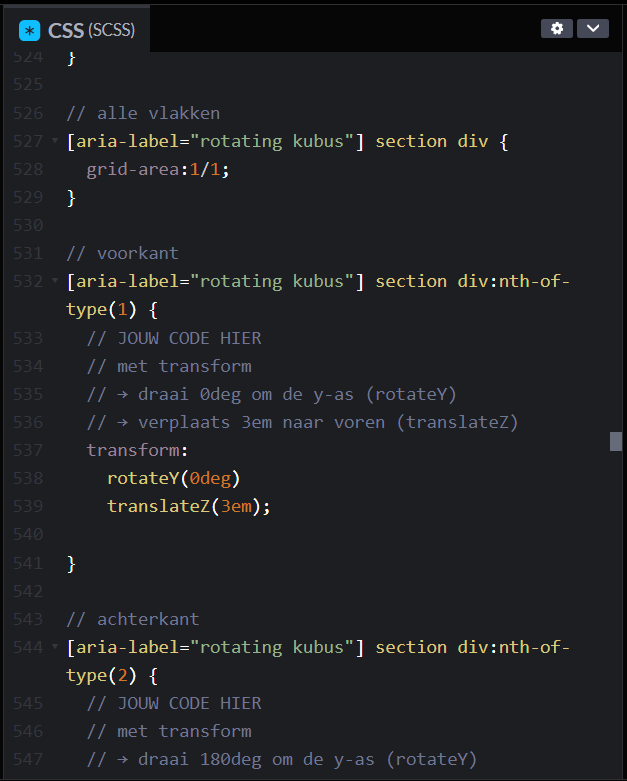
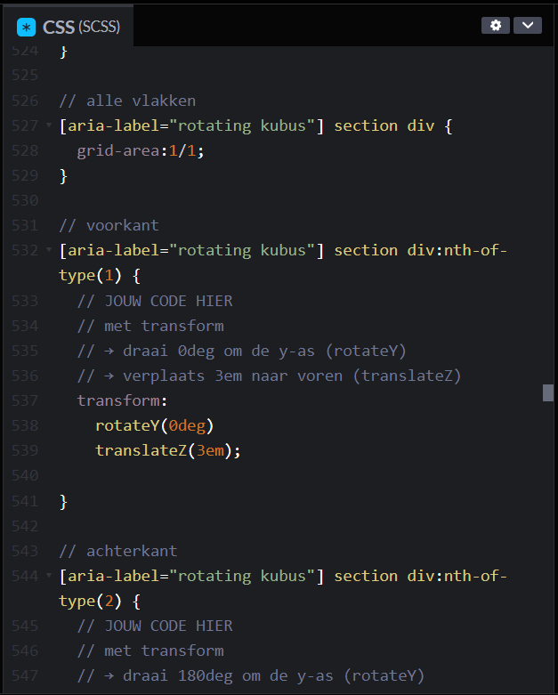

College Webtech, 3-9-2024
Een persoon die iets wilt zoeken stuurt een HTTP request, vanaf de server komt er een HTTP response.
Een document objes model (DOM) is de structuur, het verbind de websites met hun scripts.
HTML element. foto erin zetten van mijn getekende uitleg.
Daily checkout, 4-9-2024
Ik heb vandaag een breakdown schets gemaakt van mijn visitekaartje. En ik ben begonnen met dit bestand maken.
Studievragen:
1. Wat is het nut van een breakdown schets?
2. Waar moet je op letten als je een breakdownschets maakt?
3. Waar moet je beginnen met een nieuwe TML?
Ik wil nog uitzoeken hoe ik meer CSS kan toevoegen aan mijn visitekaartje.
Daily checkout, 5-9-2024
Wat heb ik vandaag gedaan?
Ik heb vandaag geprobeerd om met javascript een werkende button te maken, ik wil dat de tekst van kleur veranderd als er op de
button geklikt wordt. Het is me nog niet helemaal gelukt dus ik ga thuis nog even verder puzzelen.
Studievragen:
1. Wat maakt javascript anders dan HTML en CSS?
2. Wat zijn de mogelijkheden met Javascript?
3. Wat wil ik verder nog uitzoeken van Javascript?
Niet vergeten om:
- Ik wil graag een samenvatting maken van de leerstof van deze week
- visite kaartje afmaken voor morgen
Daily checkout, 9-9-2024
Wat heb ik vandaag gedaan?
Met codepen in CSS codes gewerkt. Een grid template gemaakt.
Drie dingen die ik geleerd heb:
1. Display: grid;
2. hoe je een grid gap maakt
3. hoe je je grid kan aanpassen aan de breedte van de beeldscherm
Twee dingen die ik interessant vind:
- Grid maken
- Uitzoeken waar het mis gaat
Daily checkout, 11-9-2024
Wat heb ik vandaag gedaan?
We hebben vandaag gekeken hoe je een indeling kan maken aan de hand van pixels op schermen. Aan de hand daarvan
hebben we een breakdown schets gemaakt en ben ik gaan coderen in mijn eigen geforkte bestand van onze squadpage.
Drie studievragen:
1. Waarom begin je met ontwerpen altijd met een small formaat schets en werk je hem dan verder uit naar een large?
2. Hoe weet je hoe veel pixels een kolom moet hebben?
3. Hoe kan je het makkelijkst een bestand kopieeren en er in verder werken?
bewijs materiaal


Daily checkout, 16-9-2024
wat heb ik vandaag gedaan?
Ik heb vandaag meegeschreven bij het college over visuele hierarchie, daarna heb ik de figma oefeningen gedaan en
verschillende ontwerpen gemaakt voor de squad page. Ik heb 9 verschillende gemaakt en uiteindeljik na het overleg
heb ik de definitieve uitgewerkt. Daarin heb ik ook de visuele hierachie en een breakdown schets van gemaakt.
Drie dingen die ik heb geleerd:
1. grid in Figma gebruiken
2. een website ontwerp maken in figma
3. visuele hierarchie snappen en toepassen
bewijs materiaal:

Daily checkout, 17-9-2024
wat heb ik gedaan vandaag?
We hebben met transform en transitions gewerkt in CSS, eerst hadden we een uitleg waar ik mee heb getyped.
Daarna heb ik de oefeningen gemaakt. Ik vind de 3d opdrachten stiekem makkelijker dan de 2d opdrachten.
Bewijsmateriaal
Voorbeeld van mijn rotating kubus.
 



Daily checkout, 18-9-2024
Wat heb ik gedaan vandaag?
Ik heb met stella en kate gekeken wat er nog gedaan moet worden aan de website. Daarvan heb ik issues gemaakt zodat we het
duidelijk op een rijtje hebben wat er nog gedaan moet worden. Ik heb verder een stuk in de Read me geschreven van onze Squadpage.
We hebben vandaag uitgezocht hoe we samen vanuit 1 document kunnen werken.
Bewijsmateriaal
Daily checkout, 23-9-2024
wat heb ik vandaag gedaan?
Ik heb met mijn nieuwe groepje een briefing voorbereid voor de nieuwe klant. Nadat we hadden overlegt wat we te weten
willen komen hebben we met het groepje uit de G klas de briefing gehad. Het was veel informatie dus ik heb meegetyped.
Daarna hebben we met ons groepje een debriefing gemaakt.
Drie dingen die ik heb geleerd:
1. Hoe een briefing werkt
2. Hoe een debriefing werkt
3. Hoe je je voorbereid om een briefing te houden
Twee leer vragen voor deze week:
1. Hoe gaat het prototype eruit zien?
2. Hoe gaan we het prototype omzetten naar een HTML?
Daily checkout, 25-9-2024
Wat heb ik vandaag gedaan?
We hebben in de ochtend een uitleg gekregen over prototyping. Ik heb meegetekend met de oefeningen en ik heb zonder
liniaal een vierkant van precies 5,0 cm getekend. En we hebben geoefend met duidelijke buttons tekenen.
Daarna heb ik twee sitemaps getekend. Een van de bestaande situatie en 1 van de ideale situatie.
Ik heb van de stekjes pagina een Wireframe getekend. Van de 1.1 en 1.1.1 pagina heb ik ze uitgetekend.
Omdat ik geen interactie heb in de pagina zonder dat het naar een andere pagina gaat heb ik geen wireflow gemaakt.
Daarna heb ik m'n wireframe in figma gemaakt, om een beter idee te krijgen hoe ik het wil gaan ontwerpen.
Drie dingen die ik heb geleerd vandaag:
1. Sitemap maken
2. Wireframe schetsen
3. Perfect vierkant van 5 cm tekenen
Bewijsmateriaal:
Sitemap:
Wireframe:

Oefeningen uit de les:


Daily checkout, 25-9-2024
Wat heb ik gedaan vandaag?
Ik heb samen met Rapha feedback gegeven op de beginsels van de code van Kyan en Daan. Ik heb
gekeken of ik met mijn eigen feedback al aan de gang kan.
Drie dingen die ik over HTML geleerd heb:
1. Minder witregels geeft meer overzicht
2. Met een contrast checker kan je kijken of je contrast goed is
3. Met 1 kleursysteem tegelijk werken en die in je root zetten
Mijn issues:
Hier staan de issue's die ik heb gekregen.
Bewijsmateriaal issues:
Hier is een issue die ik voor Kyan heb ingeschoten.
Hier is een issue die ik voor Daan heb ingeschoten.
Daily checkout, 7-10-24
Drie code conventies
1. HTML ademruimte:
Zorg dat er genoeg ruimte is tussen de stukjes code waardoor het makkelijk leesbaar blijft. Laat de code ook steeds inspringen.
Zo is en blijft het duidelijk, ook voor andere mensen die in je code kijken.
2. CSS en HTML in de zelfde volgorde:
Als je je CSS en HTML in de zelfde volgorde schrijf kan je makkelijk vinden wat bij wat hoort. Ik heb momenteel
nog niet genoeg CSS om het aan te kunnen tonen, dat komt er nog aan.
3. Media queries nesten:
Je zorgt ervoor dat de media queries plaatst in het kopje waar ze iets voor moeten doen. Ik heb momenteel nog niet
genoeg media queries om het aan te kunnen tonen, dat komt er nog aan.
Twee dingen omm leesbaarheid te verbeteren
1. Contrast:
Zorg dat je contrast hoog genoeg is. Wit op beige is bijvoorbeeld niet te lezen. image Door een groene achtergrond
te gebruiken, kan ik zowel wit als zwarte letters gebruiken.
2. lettergrootte:
Zorg ervoor dat de letters niet te klein zijn, maar ook niet te groot. Als de letters te klein zijn kunnen de mensen
met wat minder goed leesvermogen het niet meer lezen. Als de letters te groot zijn is het juist weer lastig om te zien
welke letters samen een woord vormen en waar het volgende woord begind.
In mijn eigen code
Ik ga er beter op letten dat ik alles laat inspringen en genoeg adem ruimte geef. Als ik lekker aan het typen ben wil
ik nog wel is vergeten om met tabs te werken. Ik ga er ook goed op letten dat ik niet teveel ruimte tussen de kopjes
code gebruik, dat kreeg ik ook als tip tijdens de feedback ronde.